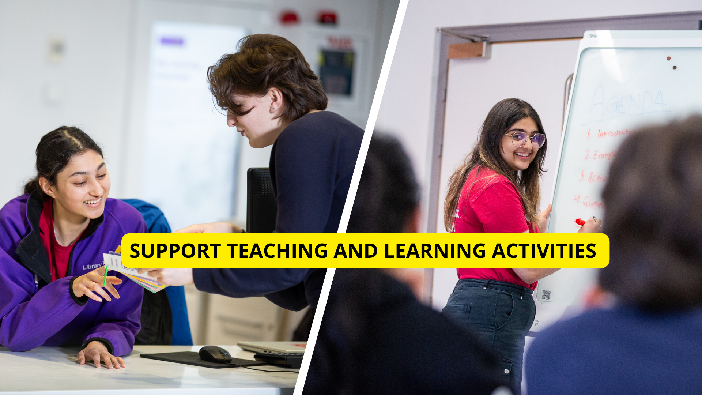
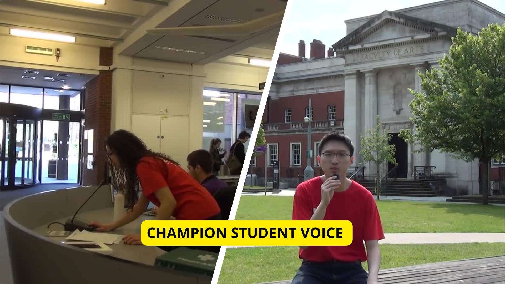
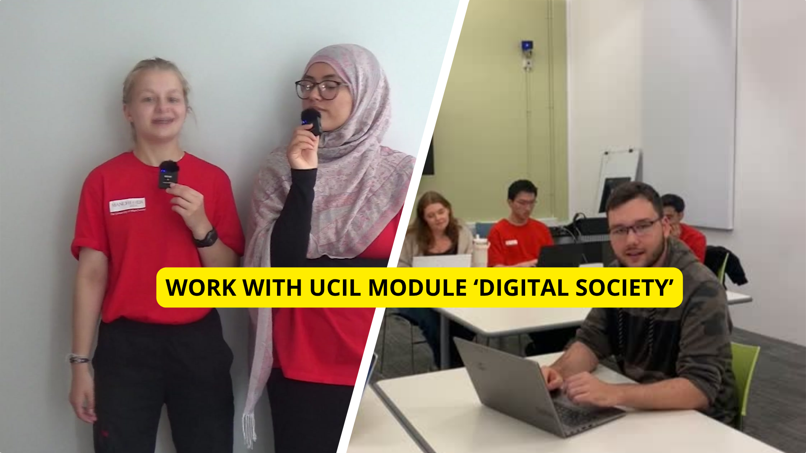
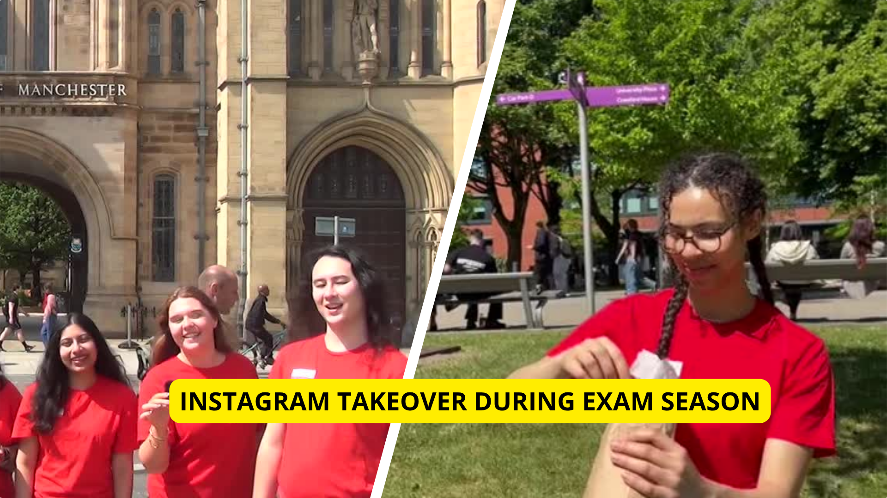

The University of Manchester Library Student Team (UMLST) was founded in 2013, initially to provide roving support around library sites but has grown into a powerful case of student-staff collaboration and pioneering student partnership at a sector-wide level. We provide study support across the 3 Teaching, Learning and Students (TLS) Programmes, ensure students feel welcome when attending TLS workshops/drop-ins, and are leaders in challenging and enhancing Library and University-wide pedagogies, practices and services.
Click on the below images to know more.




Title
Description